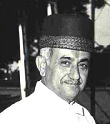

|
ssssssssssssss |
|
About Our Trust ZCET
Established in 2000 ZOROASTRIAN CHARITABLE EDUCATION
TRUST(ZCET) is registered under the Bombay Public Trust Act of 1950.
THE ST. MARYS SCHOOL is managed and run by ZCET in a small tribal town of Dahod in
Gujarat.
It was Established in the year 2000 by a old Parsi family settled in Dahod for more than 300
years. The kindergarten section started in 2000 and the St Mary's School Primary section started
in June 2002.
Established on the concept of Philanthropy and Universal Love for Mankind. ZCET caters to
providing Quality Education with
the Best Facilities at a very minimised cost. If the name Parsi is synonymous with charity the
Zoroastrian Charitable
Education trust would stand in the forefront for the same in this backward and tribal region of
Dahod.
The Trust and the School works on the Principles of Truthfulness, Charity, Skill, Endeavour and
giving encouragement to
others in good deeds.
Prophet Zarathustra's command of "Happiness comes to him who seeks happiness for others" is
followed in its true meaning
by the trust and the school managed by the trust.
The Trust works on the motto of Good Thoughts, Good Words and Good Deeds, which is also the
School Motto.
We believe the biggest strength and asset are its children, meaningful education to the child is
the nucleus of all change.
Aim Of Our Trust
Our aim is simple and far reaching; We want to offer the best to those who wish to learn; to reach
as far and as high as we can
in fulfilling our mission of quality education. We want to educate without favour, all who come to
our doors, regardless of
class, creed or colour. Reaching out to all those who deserve.
We want to provide value added educational opportunities for all, to mould them into contributing
Global Citizens of the
world.
Our Trustees
| No. | Name | Occupation | Post |
|---|---|---|---|
| 1 | Mr. Yezdi C Contractor | Agriculturist and Businessman | Founder Member & President |
| 2 | Mr. Zuben Contractor | Businessman and Director Gujarat Chapter Adventure Foundation. | Founder Member & Secretary |
| 3 | Mr. Sham Daruwala | Businessman | Vice President |
| 4 | Mr. Rohinton T. Thanewala | Advocate Indore, High Court,M.P | Member |
| 5 | Mr. Jahangir Cama | Businessman | Member |
| 6 | Mr. Nari Contractor | Ex- Captain, Indian Cricket Team. | Member |
| 7 | Mr Gurteg Singh Saini | Educationist | Member |
About St. Mary's School
"Formed in the spirit of dynamic growth, social OUR INSPIRATION justice and intellectual pursuits."Established in the year 2001, St Mary�s is the FIRST SCHOOL in Dahod District affiliated to Central Board of Secondary Education, New Delhi (CBSE).St Mary�s school has been providing all round development to each student, laying emphasis on academics and other activities through innovative curriculum and activities designed to make learning enjoyable. CBSE curriculum is followed by the school. The books prescribed in our curriculum are from the publishers NCERT (11-12), OXFORD, MACMILLAN, RATNASAGAR, PEARSON LONGMAN and AMITY. |
Our Inspiration
|  |
MR. CAWASJI RUSTOMJI CONTRACTOR 1910-1996We dedicate this to the man who truly lived by the PRINCIPLES of �Good thoughts, Good Words and Good Deeds�, Mr. Cawasji Rustomji Contractor. He has been the inspiration for us. He was a man with a vision. He wanted to develop this small tribal town by providing a platform for quality education to the children, the future. |
His encouraging words and constant blessings have helped us achieve this milestone. A man of many positive facets, Cawasji Rustomji Contractor was an ambitious man and had many dreams for the betterment of society and fulfilled many goals in his life towards this end.
Charity begins at home, and who could have done it better. He donated land for the pre-school and at the same time donated land for the construction of a balwadi (village cr�che) and vetenary hospital in a village nearby, which today is providing education facilities and vetenary services to more than ten villages.
A Dream was thus realized and we are committed to ensure that we achieve the mission that we are committed to. Quality Education to all.
Our Visionaries
| � Education is important for the progress of society but it is equally important to pay
attention to the kind of education that is being given today. The word education is
individual , one who facilitates the process of developing dormant potentials who helps
students do and achieve all that they are capable of. Education, therefore, has to be a
process in which, through interaction, human beings are trained to utilize their optimum
capacities.� Mr. Yezdi Contractor Founder Member and President, ZCET |
 |
�One of the objectives of the school is to train its girls and boys to become men & women of
strong character, high principles with a sympathetic outlook, with a spirit of service to
the country and a desire to help in a practical way.� �Our biggest strength is that we believe in investing and developing in our most crucial, valuable essential assets- our children.� � For us each child is like our own. We nurture them, groom them and help them grow into responsible individuals who are able to contribute to the family, society , country and the world.� Zuben Y. Contractor Founder Member and Secretary, ZCET |
Home |
Prospectus |
About Us |
Management |
Admission |
School Rules |
Playgroup |
Contact Us |
 |
 |
 |
| SITE BEST VIEWED AT 1366 x 788 Copyright © 2013 www.stmarysschool.org. All rights reserved. |